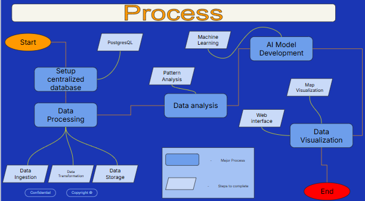

Network Topology Analyzer for RTX
(WIP)

While still in progress, the aim of this project is to use Machine Learning to analyze 4 million traceroutes provided by RTX. With that much data, we can find trends, patterns, etc. of the traceroutes over the time perioud they were tracked. Here is a diagram showcasing our timeline to creating the project.